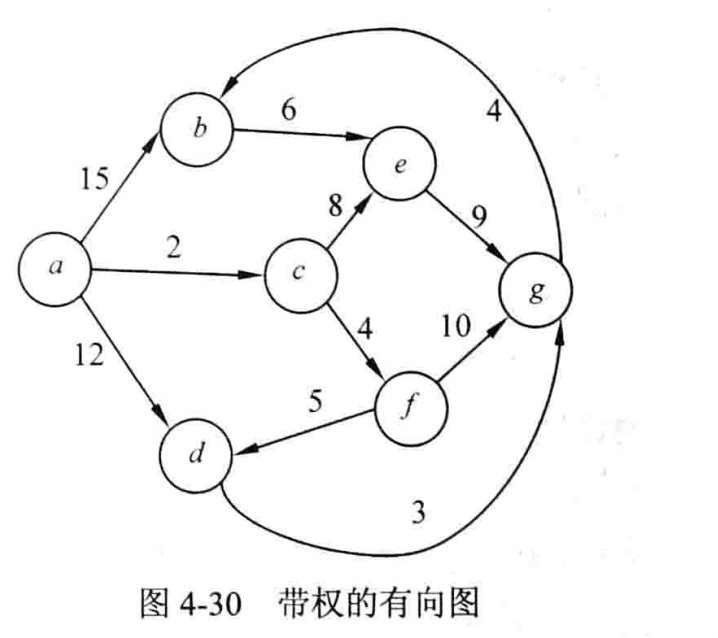
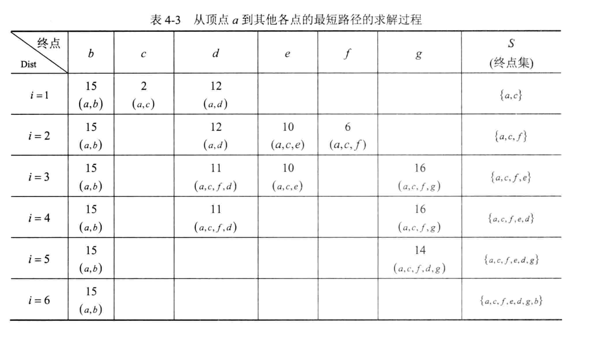
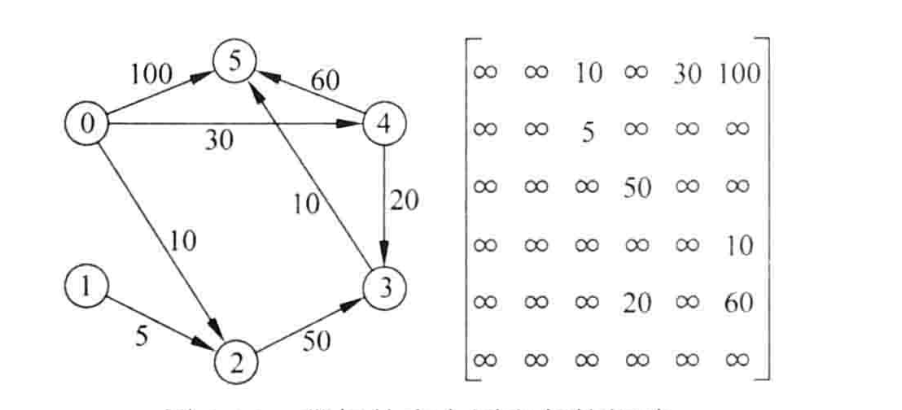
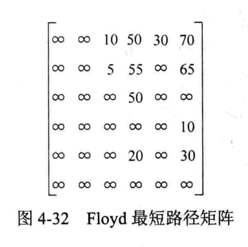

从一条边，走进算法的思路
别急着背答案。
看懂每一步为什么。
用你讲义里的例题，观察一次选择、一次比较，如何逐渐得到最优解。
04
四种算法，一套学习方式选算法 → 点下一步 → 看图与推理同步变化
01 / 图上的变化
已确定 / 已入树当前处理路径 / 选中边正在比较
03 /
04 / 已走过的步骤点击可回到那一步
查看原始截图与讲义
最短路径沿用你的原图。最小生成树题由截图1去掉方向改编；Floyd 采用校正后的结果，对角线统一记0。



